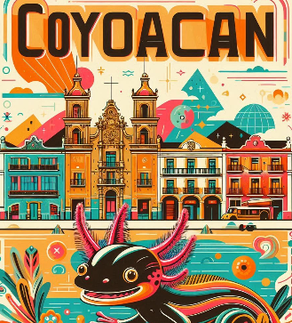

Cabecera
Coyoacán: el alma bohemia de la ciudad
Pasea por calles empedradas, casas coloridas y plazas llenas de vida. Coyoacán es arte, es historia, es sabor. Conoce la casa de Frida Kahlo, prueba un churro en el Jardín Centenario y deja que este barrio mágico te envuelva con su esencia única.
Nuestro recorrido te lleva al corazón cultural del sur de la ciudad, donde cada rincón tiene una historia que contar.
Ideal para los amantes del arte, la historia y los momentos tranquilos.
